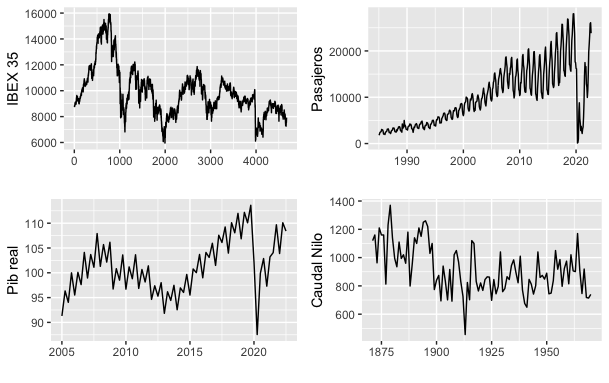
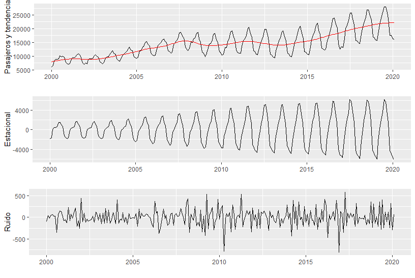

1 Introducción
1.1 Origen del arte o ciencia de la predicción
Para conocer el origen de la predicción es necesario remontarse a la antigua Grecia, al oráculo de Delfos. Cuenta la mitología que el dios Zeus soltó dos águilas, una desde el este y otro desde el oeste, y el punto donde se encontraran sería el centro del universo. Las águilas se encontraron en Delfos, y en el punto exacto donde se encontraron colocó una piedra, el omphalos (ómbligo). Gaia (también llamada Gea) daba a conocer sus profecías a través de las sibilas. Además, el lugar estaba protegido por la hija de Gaia, la temible serpiente Pitón.
Al igual que su padre, el dios Apolo, tenía una vida interesante a la par que complicada. No obstante, el primer logro por el que se dio a conocer, fue dar muerte a la serpiente Pitón. Dado que la serpiente Pitón era la hija de la diosa Gaia, habría que reparar tal desagravio. Por ello, Apolo tuvo que trabajar cuidando vacas durante 8 años para purificarse. Una vez pagó su deuda, arrebató el oráculo a Gaia. Desde entonces, fue conocido como Apolo pitio, el dios de la profecía y Delfos fue su principal templo.
Eso es con respecto a la mitología. Excavaciones arqueológicas han mostrado que desde 1500 hasta 1100 A.C., el sitio estaba ocupado por pequeños asentamientos micénicos al final de la edad de Bronce que rezaban a la diosa Gaia. El nuevo dios Apolo llegó, quizás mediante la invasión de los Dorios, y comenzó a dominar. El resultado fue el mayor negocio de predicción más exitoso en la historia. Por casi mil años, el oráculo de Delfos era consultado para temas relacionados con negocios, política, religión y guerra. Con el auge del cristianismo y en el tercer siglo D.C., el oráculo perdería toda su fama (y negocio).
El poeta Iamblichus cuenta una historia sobre el oráculo cuando todavía estaba en su máximo apogeo. Un gravador de gemas llamado Mnsarchus visitó el oráculo para preguntarle si un viaje que estaba pensando realizar sería beneficioso. El oráculo le respondió que lo sería, además, le dijo que su mujer estaba embarazada (algo que él no sabía en aquel momento) y que daría a luz a un hijo que destacaría en belleza y sabiduría.
Así fue y Mnesarchus se dio cuenta que el hijo fue enviado por lo dioses, y lo llamó Pitágoras (que significa en griego, predicho por la pitia). Matemático, filósofo e incluso entrenador olímpico, Pitágoras desarrolló un nuevo sistema de predicción basado en el poder de los números en lugar del oráculo. Los detalles de cómo este sistema de predicción numérica funcionaba permanece desconocido, dado que no quedan trabajos escritos por Pitágoras. Lo poco que se conoce sobre el legado de Pitágoras se debe a filósofos posteriores como Platón y Aristóteles.
Hasta ahora hemos introducido la historia acerca del arte de la predicción. No obstante, es interesante destacar que aunque en el idioma español no distiguimos entre las predicciones que se realizan de forma científica y las que se realizan mediante técnicas de adivinación (bola de cristal, tarot, etc..). En inglés si existe dicha palabra y es forecasting, cuyo origen creo es digno de mencionar.
Una de las aplicaciones más famosas del arte de la predicción es la meteorología y de hecho, la meteorología está muy relacionada con la palabra inglesa forecast. Si nos remontamos a Reino Unido en 1854, el Almirante Robert FitzRoy, que había capitaneado el Beagle, barco en el que viajó Darwin alrededor del mundo, Figura 1.1, estableció la primera oficina meteorológica. Este ex-marinero sabía cómo las predicciones meteorológicas tenían potencial para salvar vidas de los marineros advirtiendo las tormentas.
Lamentablemente, los esfuerzos de FitzRoy no fueron bien recibidos por el público ni por la comunidad científica en aquella época, donde las predicciones meteorológicas provenían principalmente de los astrólogos. Para evitar que compararán sus predicciones con la astrología evitó utilizar palabras como prediction, y en su lugar, inventó una nueva forecast, que la definió de la siguiente manera: The term forecast is strictly applicable to such an opinion as is the result of a scientific combination and calculation
1.2 Clasificación de métodos de predicción
Dado que existe una amplia amalgama de técnicas de predicción, hacer una clasificación exhaustiva de dichas técnicas sería algo complicado. No obstante, una primera aproximación a una clasificación podría ser la siguiente:
-
Métodos Cualitativos: Este tipo de métodos no utilizan ningún tipo de algoritmo matemático, sino que sus predicciones se basan en experiencias, opiniones, consejo de expertos, intuiciones, rumores. A este tipo de información también se le conoce como soft information. Entre los métodos cualitativos más conocidos se encuentran:
Método Delphi: Pronóstico desarrollado mediante un grupo de expertos que responden preguntas en rondas sucesivas. Las respuestas anónimas del grupo retroalimentan en cada ronda a todos los participantes. Se pueden usar entre tres y seis rondas para lograr un consenso sobre el pronóstico. El método Delphi fue desarrollado en 1948 al inicio de la guerra fría por la corporación RAND para el departamento de defensa de los EEUU para investigar qué ocurriría en una guerra nuclear.
Estudios de mercado: Grupos, cuestionarios, pruebas de mercado o estudios que se usan para obtener datos sobre las condiciones del mercado, generalmente sobre intención de compra de un determinado producto
Juicio de expertos: Pronóstico que puede hacer un grupo o un individuo basándose en sus experiencias, intuición o hechos relacionados con la situación. No se usa método riguroso
-
Métodos Cuantitativos: Son métodos que implican algún tipo de ecuación matemática basados en información cuantitativa como ventas anteriores, datos de inventarios, promociones, etc. A este tipo de información también se le conoce como hard information. A la hora de realizar predicciones mediante métodos cuantitativos, los métodos más conocidos se pueden clasificar en función del número de variables que se incluyan en el modelo.
Series temporales o modelos extrapolativos: Una serie temporal es simplemente el conjunto de valores de una determinada variable ordenados con respecto al tiempo. La Figura 1.2 muestra algunos ejemplos de series temporales que podrán ser analizadas con los métodos que se proponen en este libro. Las series que se muestran en la figura desde izquierda a derecha y desde arriba hacia abajo son las cotizaciones medias diarias del IBEX-35, las entradas mensuales de pasajeros internacionales por avión en España, el PIB per capita trimestral en términos reales y poder de paridad de compra de España, y el caudal anual del río Nilo a su paso por Assuan. Dado que sólo se analiza una variable también se les conoce como modelos univariantes. El análisis de series temporales comprende una gran variedad de métodos que abarcan desde modelos muy básicos hasta modelos muy complejos como podrían ser modelos no lineales basados en redes neuronales. Para el objeto de este libro, nos centraremos en métodos simples que suelen ser los más utilizados en la industria, como las técnicas: i) Ingenuas (Naïve), ii) Medias móviles y iii) Suavizado exponencial.
Métodos causales o Modelos explicativos: Los métodos causales utilizan más de una variable por ello también se les conoce como multivariantes. En este caso la variable que queremos predecir su valor se expresa en función de otras variables explicativas. Por ejemplo, se podría explicar el consumo de energía eléctrica en función de la temperatura, o las ventas de un producto en función del gasto publicitario. Este tipo de modelos se suelen expresar en forma de regresión, con la única peculiaridad que las variables incluidas en la regresión deben estar ordenadas con respecto al tiempo. Por este motivo, este tipo de regresiones se les denomina regresiones dinámicas.

1.3 Series temporales
La materia prima con la que vamos a contar en este libro son datos procedentes de series temporales extraídas de la realidad, y como tales, con propiedades muy variadas. Como se ha dicho antes, una serie temporal es una sucesión de valores de una variables ordenados en el tiempo. La predicción consistirá en obtener los valores futuros de dicha variable. Dicho de este modo, estaríamos tratando la variable como un conjunto de valores dados o deterministas, como si no pudiera haber sido de otro modo. Esto es cierto en casos muy raros, porque la realidad es que las cosas pueden suceder de muchas formas posibles o, al menos, así lo suponemos. Esta concepción se generalizará más tarde cuando tratemos las series temporales como realizaciones de procesos estocásticos.
Para ser más explícitos, la Figura 1.3 muestra una posible descomposición de una porción de la serie de pasajeros (Figura 1.2) en tendencia, estacionalidad y ruido (a veces también llamado componente irregular o residuo).

El análisis de series temporales consiste en identificar el patrón de esos datos, es decir, la forma que tienen esos datos a lo largo del tiempo para poder proyectarla en el futuro y utilizar esas proyecciones como predicciones.
Para identificar el patrón generador de datos, la serie temporal se puede dividir en componentes como nivel promedio, tendencia, estacionalidad y error. La Figura Figura 1.3 muestra la representación gráfica de dichos componentes. De este modo, la serie temporal se puede expresar como la combinación de dichos componentes. Si la forma en que combinamos dichos componentes es aditiva, la serie temporal \(y(t)\) se podría expresar de la siguiente forma:
\[ y(t)=N+T+S+e \tag{1.1}\] donde \(N\) es el nivel, es decir el valor promedio de la serie distinto de cero, \(T\) es la tendencia que representa las variaciones lentas de la serie temporal, por eso también se le conoce como componente de baja frecuencia, \(S\) es la estacionalidad y finalmente \(e\) es el error aleatorio. Hay que señalar que aunque los principales componentes de una serie temporal vienen definidos en Ecuación 1.1, pueden existir otros componentes como variables exógenas y una componente de ciclo, cuyo periodo es diferente de los reflejados en la componente \(S\), como por ejemplo el ciclo económico.
Entre los componentes de una serie temporal, quizás el que parece menos común es la componente de estacionalidad, la cuál se podría definir como la variación cíclica o periódica alrededor de la tendencia. Un ejemplo de serie temporal con estacionalidad podría ser las ventas de juguetes o de mazapanes. Dichas ventas son mayores durante el mes de diciembre y bajas durante el resto de los meses.
Otra forma de introducir los componentes es mediante la siguiente expresión multiplicativa, tal que:
\[ y(t)=N\cdot T \cdot S \cdot e \tag{1.2}\]
O una expresión mixta: \[ y(t)=(N + T) \cdot S + e \tag{1.3}\] donde las componentes \(N\) y \(T\) se combinan de forma aditiva, la estacionalidad \(S\) de forma multiplicativa y el error \(e\) de forma aditiva.
En este libro nos centraremos en el análisis de la familia de suavizado exponencial para realizar las previsiones. Se eligieron estos procedimientos porque suelen estar disponibles en el software comercial y cumplen los criterios de bajo coste y baja participación de la gerencia.
A continuación, se expondrán las diferentes versiones de algoritmos pertenecientes a la familia del suavizado exponencial. Cada versión u algoritmo cambia dependiendo de los componentes que contenga la serie temporal a analizar.